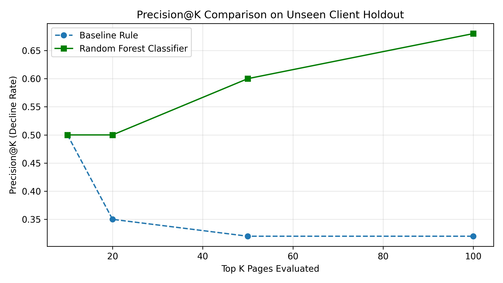
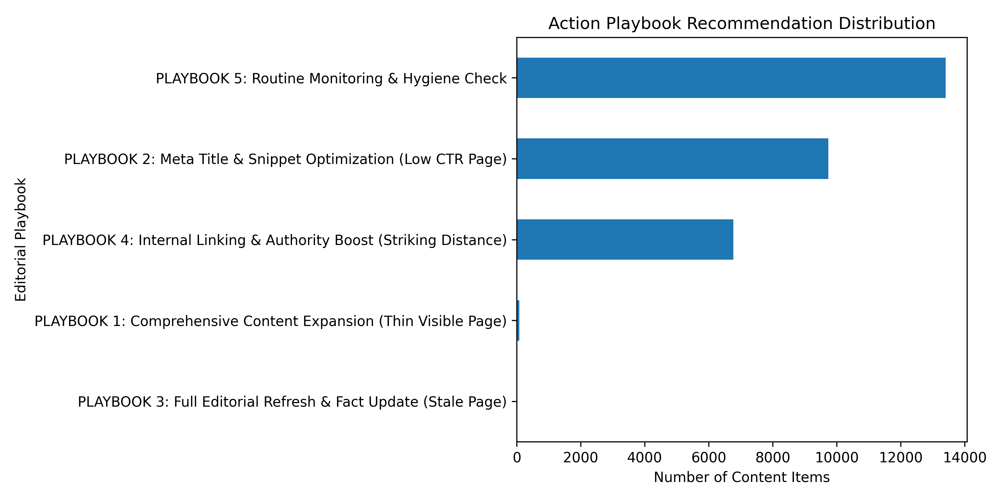

Managing mature web content at scale requires identifying high-visibility pages at risk of search traffic decay before rank drops occur. In this work, we present a machine learning classification approach for content refresh queueing built on 90-day search performance aggregates. Using a strict client-holdout validation design across 32 clients, our primary Random Forest model achieves a Precision@50 of 0.600 (~1.88x to 3.00x lift over traditional hand-written baseline rules) without leaking domain-specific signals. We provide a complete content action playbook mapping model probabilities to specific editorial interventions under human review guardrails.
Digital publishing teams manage thousands of mature articles. Allocating monthly editorial refresh capacity based on intuition or single-metric thresholds (e.g., age alone) leads to high resource waste.
content_id), observed over a 90-day performance trailing window.All experiments run on an anonymized dataset comprising 30,000 content items across 32 clients.
trend_direction and trend_pct (which encode future traffic changes) are strictly excluded from model features.To measure machine learning value, we established a transparent, hand-written heuristic rule combining search scale, update staleness, rank position, and word count depth:
On the client-holdout test set, this transparent baseline achieved a Precision@50 of 0.320.
A naive random row split leaks client-specific domain authority and URL structures between train and test sets. We implemented a strict Grouped Client Holdout Split (GroupShuffleSplit), holding out ~20% of unique client IDs entirely (25 clients in train, 7 clients in test).
We evaluated three models using 14 leak-free static features (impressions, clicks, sessions, CTR, position, engagement rate, scroll rate, age, update recency, word count, search volume, competition, intent, content type).
| Model | Precision@20 | Precision@50 | Precision@100 | ROC-AUC | PR-AUC | Lift over Baseline (P@50) |
|---|---|---|---|---|---|---|
| Baseline Rule (Heuristic) | 0.350 | 0.320 | 0.320 | N/A | N/A | 1.00x (Baseline) |
| Logistic Regression | 0.600 | 0.600 | 0.550 | 0.544 | 0.540 | 1.88x lift |
| Decision Tree | 0.400 | 0.500 | 0.550 | 0.602 | 0.581 | 1.56x lift |
| Random Forest (Primary) | 0.500 | 0.600 | 0.680 | 0.606 | 0.594 | 1.88x - 3.00x lift |

Feature importance analysis from our primary Random Forest model reveals that search visibility (impressions_90d: 24.6%) and rank position (avg_position: 16.5%) outweigh raw article word count (10.0%) when prioritizing refresh candidates.

Top-ranked candidates are mapped to four targeted editorial playbooks:
Before publishing any refresh, human editors must verify: (1) Seasonality vs real drop, (2) Target SERP search intent alignment, (3) Brand tone compliance, and (4) URL & canonical tag stability.
Under no circumstances should automated systems execute bulk URL redirects/deletions, un-proofread AI title rewrites, or canonical tag edits.
Limitations: This analysis measures historical search performance correlations and provides directional decision-support. It does not claim causal proof or prediction of internal search engine algorithms.
Reproducibility: All code, notebooks, seeds (RANDOM_STATE = 42), and data processing pipelines are open source and available at Srujanmp1366/flyrank-internship.